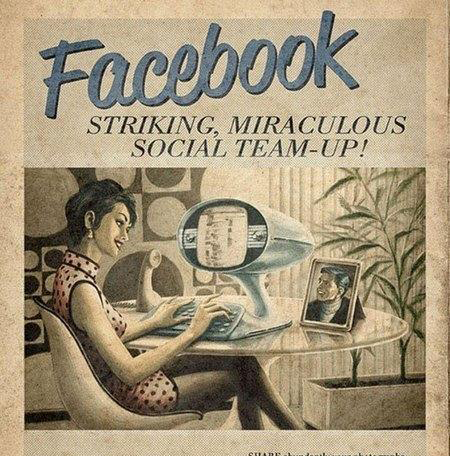

BBC News
Ekaterinburg, sunday, october 25, 2015
Ban due on direct flights between Russia and Ukraine
Direct flights between Ukraine and Russia will stop on Sunday, as new sanctions initiated by Kiev come into effect.Moscow first called Kiev's ban on Russian airlines "madness", then announced that it would mirror the move.
Ukraine now says flights will end at midnight on Saturday, after last-minute crisis talks failed.
Up to 70,000 passengers a month will be affected.
The sanctions are intended to punish Russia for annexing Crimea and supporting armed rebels in eastern Ukraine.
The fact that they have been introduced now, when a ceasefire is finally holding on the ground, shows how bitter relations remain.
Russia has accused Ukraine of shooting itself in the foot with the move, pointing out that most passengers are Ukrainian travelling to work in Russia, visiting relatives or in transit.
But two-thirds of all passengers travel on Russian airlines.
Russia's transport minister has estimated that the loss in ticket sales to both countries will run to around $110m (£73m) a year.
Jump media playerMedia player helpOut of media player.
Press enter to return or tab to continue.
Up to 70,000 passengers a month
will be affected.
Media captionSarah Rainsford spoke to passengers checking-in for one of the last few flights to Kiev from Moscow
The ban is already angering passengers from both countries.
The government does things and it's the people who suffer,
Ukrainian Alexander Vyshnevsky said, after checking-in for one of the last remaining flights to Kiev from Moscow.
He had been visiting his Russian wife and daughter.
Russia and Ukraine are like one country for me
Half of Ukraine is married to Russians. So this is total nonsense,
Mr Vyshnevsky added.
This is stupid,
Russian Konstantin Fokin agreed, before his own flight to Kiev. His sister lives in Ukraine and travelling to see her will now be difficult.
Lots of people have relatives in both Russia and Ukraine and they want to communicate. It's up to the authorities to stop this stupidity
, Mr Fokin said.
Last-minute talks to find a compromise are under way - so far to no avail - and the chances of success look slim in this climate.
So as of Sunday, passengers will be forced to take longer, more expensive routes via third countries, or to brace themselves for a 13-hour trip by train.
Maldives Vice-President Adeeb arrested over 'bomb plot'
The vice-president of the Maldives has been arrested in connection with an alleged plot to assassinate the president, say police and officials.
Ahmed Adeeb was in detention and being charged with high treason, Home Minister Umar Naseer said on Twitter.
President Abdulla Yameen narrowly escaped injury when a blast struck the boat he was using to return home from the airport late last month.
In recent years, the Maldives has been rocked by political infighting.
Mr Yameen's election has been the subject of drawn-out wrangling.
Security has been tightened in the capital Male amid fears of "turmoil" triggered by the arrest, says the Maldivian newspaper Haveeru.
By early morning Saturday, lorries loaded with policemen and soldiers were seen on nearly every street
, it reports.
Three others were also arrested on Saturday - including a former member of Adeeb's security detail and a member of the army's bomb squad, Associated Press news agency reported.
The Maldives Independent website said Mr Adeeb's arrest had "surprised and enthralled many Maldivians".
President Yameen and his wife were travelling to Male from the island where the airport is located on 28 September when their speedboat was hit by the bomb blast.
advertising

Trillions of Facebook posts added to search results
Facebook has indexed almost two trillion posts put on the site by its members to make it easier to find them.
The change means that many older posts will now be added to results when people search for news or information.
The move is being seen as part of Facebook's attempts to keep people on the site rather than go elsewhere to keep up to date with events.
It said options were available for people that did not want their older posts to be more widely accessible.

Bigger audience
Tom Stocky, Facebook's head of search, said in a blog post that many people already turned to Facebook when trying to find out how friends and family were reacting to world events.
About 1.5 billion searches are carried out on Facebook every day he said.
The changes that Facebook has introduced will mean members of the social network will now also see posts by strangers alongside those from news organisations and people closest to them.
Search results are organised to help you cut through the noise and quickly understand what the world is saying about a topic in the moment,
said Mr Stocky.
The post also detailed what Facebook users can do to limit who sees the older posts they shared.
Currently the expanded search results are only available to Facebook members in the US.
The move puts Facebook into direct competition with Twitter which recently introduced a similar system called Moments, said Caitlin McGarry on PC World.Facebook has a much wider audience than Twitter said Ms McGarry. so Facebook's potential reach for its search tools is exponentially larger.